资源管理器打磨（二）
t86 验收时提的三条，加上之后发现的两个 bug。截图都在开发服务的雾港里拍（nbook 浅色），候选是在真实页面上注入样式示意的，不是最终代码。VS Code 的做法见 Task 目录里的 vscode-research.md。
待定新建与改名的输入框
现在用的是表单里的输入框：胶囊圆角、外面一圈 3.5px 的光环加投影，和行一样高，看起来像一个浮在树上的控件；同名报错是一条整块的红底白字。上排是新建文件，下排是改名成已有的名字后按回车。
A 现状
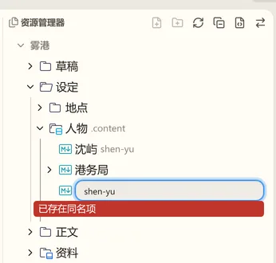
B 行里的细框
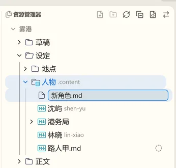
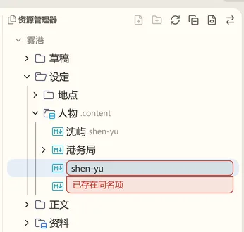
C VS Code 的直角细框
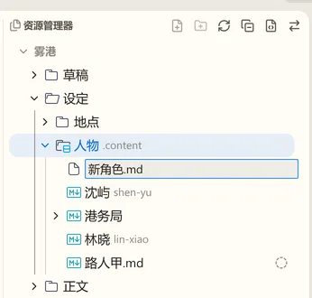
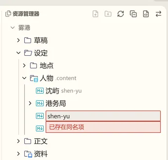
推荐 B：和选中块、右键菜单项是同一套圆角与底色，输入时这一行仍然像树里的一行；C 的直角在这套圆角界面里显得突兀。B、C 的报错都改成贴着输入框的浅色条，不再是整块红底。
待定选中的样子，以及关掉文件之后
现在选中只有一种样子：浅蓝底、蓝字。关掉编辑器里的文件之后，树里那一项还是浅蓝底，看上去像还开着。上排是在树里点选、鼠标停在“沈屿”上；下排是打开“林晓”、用标签上的关闭按钮关掉之后。
A 现状

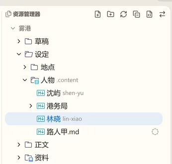
B 焦点不在树里时变灰
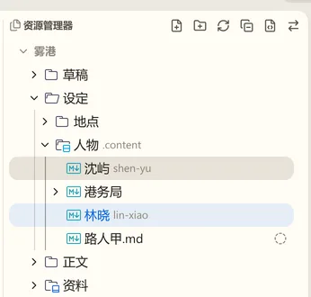
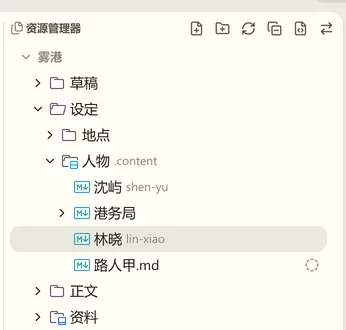
C 焦点不在树里时不画

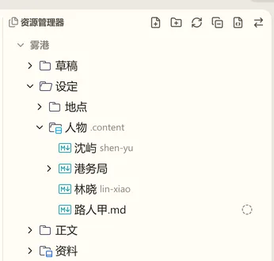
推荐 B：关掉文件后不再像“还开着”，又保留“我刚才在哪”的位置感，新建、粘贴这类按选中定位的操作也看得到落点；C 看不出选中，焦点回到树里时选中突然冒出来。灰底要和悬停区分开：比悬停深一档。
待定滚动条与标题动作只在鼠标进来时出现：用在哪里
做法照 VS Code：滚动条叠在内容上、不占宽度，8px 宽的半透明滑块，没有轨道；鼠标进入视图、滚动或拖滑块时 100ms 淡入，离开后等 500ms 再用 800ms 淡出。视图标题右边的动作（新建、刷新、收起、“移动到”等）在鼠标位于整个视图上、或焦点在视图里时出现，键盘用户 Tab 进去也看得到。左：鼠标在别处；右：鼠标在树上（滑块是注入的示意）。
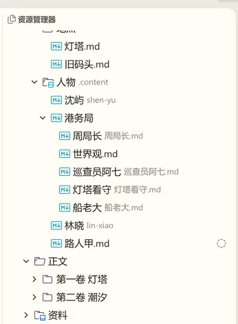
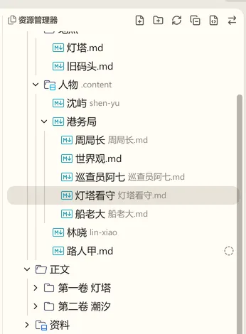
现状：标题动作一直显示；滚动条是系统的细滚动条，一直占着右边的槽位（这张示意图里看不到现状的滚动条：无头浏览器把系统滚动条藏了）。
A 只用在资源管理器
别的视图仍是常显动作与系统滚动条。
B 所有视图
滚动条做成 nb-ui 的一个组件，视图外框统一用；标题动作的显示规则写进视图标题的合同。
推荐 B：只改资源管理器的话，同一个侧栏里换个视图滚动条和标题就变了样。nb-ui 规范里“动态列表用 scrollbar-gutter: stable 的系统细滚动条”一条要改成：工作台视图用叠加的悬停滚动条。
已修验收时发现的 bug
选中与悬停的底色右端被截掉：行左右各让出 6px，但行组件本身又是 100% 宽，右端越出 6px、压进滚动条的槽位被裁掉。改成宽度由左右两边定（c7cf1b6a0），e2e 量左右两边离树的距离相等。
侧栏从收起状态往外拉时，活动栏与侧栏分成两张卡片，松手后才连上：是否相连看的是已落账的侧栏宽度，拖动中它还是 0。改成拖动中已拉出的部件按有宽度算（4b57e56b1）。左：修之前拖到一半；右：修之后。
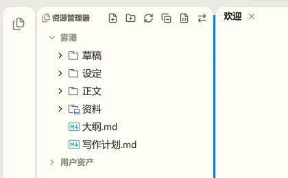
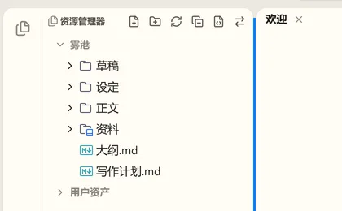
“移动到”菜单被资源管理器选中的行盖住：t86 第四轮给树里的行容器加了 z-index: 1（落点浅底在行下、插入线在行上），这个层级越出了树，盖住了挂在页面末尾、没有 z-index 的菜单。树改成自成层叠上下文（5c22c4ec1），e2e 检查菜单项上最上层的元素属于菜单。
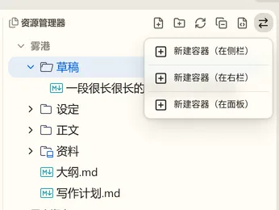